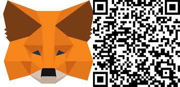

Founded in 2020 We are a team from Hong Kong, specializing in artwork on NFT.
We released our first NFT Wedjat Lucky Cat in 2022,
which is based on the Egyptian myth "Eye of Horus" and the Japanese mascot "Lucky Cat".
We hope everyone will have the luck to see the truth.
The year 2023 is an important year for TAS and for WED3 in Hong Kong.
We have launched our first blind box NFT project, Lucky Cat Sufing,
which is the first blind box NFT in Hong Kong featuring Lucky Cat Sufing.
We are working on the second NFT project and will cooperate
with a water sports group in Hong Kong to give more physical functions to NFT,
If you like our products, you are welcome to buy them on Opensea,
and you can also sponsor us with crypto currency,
your support is our greatest motivation,
Thank you for your support !
if you have any questions, please feel free to contact us!
sponsor us ! Thank you !
0x8384008F7B5240c5C817e6f4102dFE31C2903ad6
成立於2020年是來自香港的團隊,專注於NFT上的藝術創作.
我們於2022年發行了首個NFT Wedjat Lucky Cat ,
該作品以埃及神話"荷魯斯之眼"及日本吉祥物"招財貓"作藍本,
希望大家都擁有看清真相的幸運.
2023年是(TAS)重要的一年,也是香港WED3重要的一年,
乘著香港特區政府首長宣佈將香港打造為國際加密貨 幣中心,
我們推出了首個盲盒NFT項目 Lucky Cat Sufing,該作品是香港首個以招財貓滑浪為題的盲盒NFT.
我們正在籌備第二個NFT盲盒項目,並會跟香港一個水上活動團體合作,
以賦予NFT更多實體功能.
如果你喜歡我們的產品,歡迎到Opensea上購買,
你亦可以加密貨幣贊助我們,你的支持是我們最大的動力,
感謝你們的支持,如果有任何問題,歡迎隨時與我們聯絡!